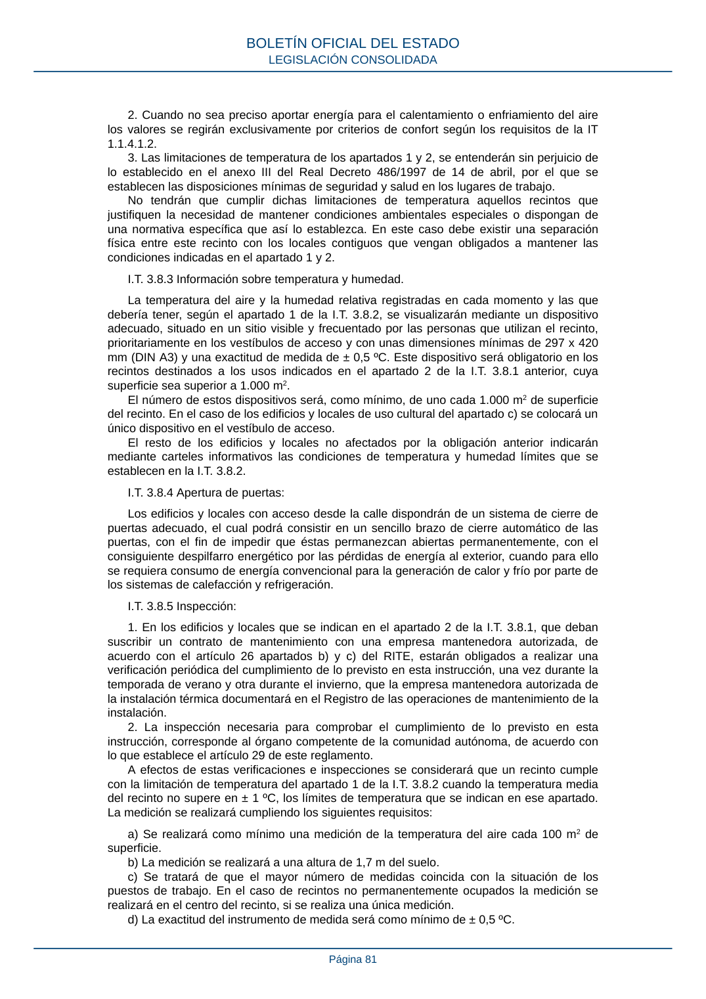

RITE · Página 81 · versión 2022-08-02
SHA256: ad1680c83bf4c7f5c656af1794c32ad0669ad9f36ac293737ff3f95177ff7b26 · página física 81 de 97 · métodos de encabezado
solo si están cotejados.
Formatos: Markdown · JSON de bloques · PDF p. 81 · imagen PNG
2. Cuando no sea preciso aportar energía para el calentamiento o enfriamiento del aire los valores se regirán exclusivamente por criterios de confort según los requisitos de la IT 1.1.4.1.2. 3. Las limitaciones de temperatura de los apartados 1 y 2, se entenderán sin perjuicio de lo establecido en el anexo III del Real Decreto 486/1997 de 14 de abril, por el que se establecen las disposiciones mínimas de seguridad y salud en los lugares de trabajo. No tendrán que cumplir dichas limitaciones de temperatura aquellos recintos que justifiquen la necesidad de mantener condiciones ambientales especiales o dispongan de una normativa específica que así lo establezca. En este caso debe existir una separación física entre este recinto con los locales contiguos que vengan obligados a mantener las condiciones indicadas en el apartado 1 y 2. I.T. 3.8.3 Información sobre temperatura y humedad. La temperatura del aire y la humedad relativa registradas en cada momento y las que debería tener, según el apartado 1 de la I.T. 3.8.2, se visualizarán mediante un dispositivo adecuado, situado en un sitio visible y frecuentado por las personas que utilizan el recinto, prioritariamente en los vestíbulos de acceso y con unas dimensiones mínimas de 297 x 420 mm (DIN A3) y una exactitud de medida de ± 0,5 ºC. Este dispositivo será obligatorio en los recintos destinados a los usos indicados en el apartado 2 de la I.T. 3.8.1 anterior, cuya superficie sea superior a 1.000 m2. El número de estos dispositivos será, como mínimo, de uno cada 1.000 m2 de superficie del recinto. En el caso de los edificios y locales de uso cultural del apartado c) se colocará un único dispositivo en el vestíbulo de acceso. El resto de los edificios y locales no afectados por la obligación anterior indicarán mediante carteles informativos las condiciones de temperatura y humedad límites que se establecen en la I.T. 3.8.2. I.T. 3.8.4 Apertura de puertas: Los edificios y locales con acceso desde la calle dispondrán de un sistema de cierre de puertas adecuado, el cual podrá consistir en un sencillo brazo de cierre automático de las puertas, con el fin de impedir que éstas permanezcan abiertas permanentemente, con el consiguiente despilfarro energético por las pérdidas de energía al exterior, cuando para ello se requiera consumo de energía convencional para la generación de calor y frío por parte de los sistemas de calefacción y refrigeración. I.T. 3.8.5 Inspección: 1. En los edificios y locales que se indican en el apartado 2 de la I.T. 3.8.1, que deban suscribir un contrato de mantenimiento con una empresa mantenedora autorizada, de acuerdo con el artículo 26 apartados b) y c) del RITE, estarán obligados a realizar una verificación periódica del cumplimiento de lo previsto en esta instrucción, una vez durante la temporada de verano y otra durante el invierno, que la empresa mantenedora autorizada de la instalación térmica documentará en el Registro de las operaciones de mantenimiento de la instalación. 2. La inspección necesaria para comprobar el cumplimiento de lo previsto en esta instrucción, corresponde al órgano competente de la comunidad autónoma, de acuerdo con lo que establece el artículo 29 de este reglamento. A efectos de estas verificaciones e inspecciones se considerará que un recinto cumple con la limitación de temperatura del apartado 1 de la I.T. 3.8.2 cuando la temperatura media del recinto no supere en ± 1 ºC, los límites de temperatura que se indican en ese apartado. La medición se realizará cumpliendo los siguientes requisitos: a) Se realizará como mínimo una medición de la temperatura del aire cada 100 m2 de superficie. b) La medición se realizará a una altura de 1,7 m del suelo. c) Se tratará de que el mayor número de medidas coincida con la situación de los puestos de trabajo. En el caso de recintos no permanentemente ocupados la medición se realizará en el centro del recinto, si se realiza una única medición. d) La exactitud del instrumento de medida será como mínimo de ± 0,5 ºC. BOLETÍN OFICIAL DEL ESTADO LEGISLACIÓN CONSOLIDADA Página 81
